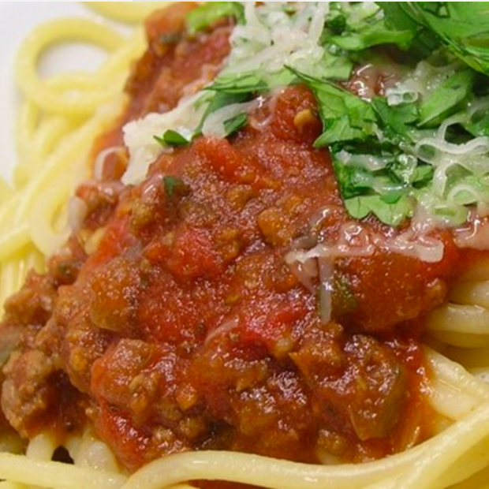
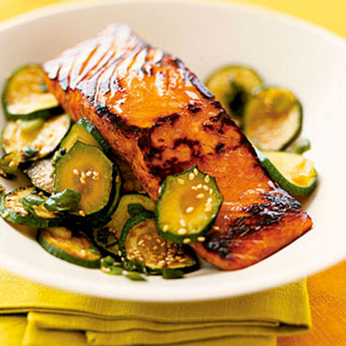

-
Waffle recipe
Ingredients
2 cups flour, 1 teaspoon salt, 4 teaspoon baking powder, 2 tablespoon sugar, 2 eggs, 1 1/2 cups milk, 1/3 cup butter
Directions
1. In a large bowl, mix together flour, salt, baking powder and sugar; set aside. Preheat waffle iron to desired temperature.
2. In a separate bowl, beat the eggs. Stir in the milk, butter and vanilla. Pour the milk mixture into the flour mixture; beat until blended.
3. Ladle the batter into a preheated waffle iron. Cook the waffles until golden and crisp. Serve immediately.
-
Spaghetti Sauce recipe

Ingredients
1 pound ground beef, 1 onion(chopped), 4 cloves garlic(minced) 1 small green bell pepper(diced), 1 (28 ounce) can diced tomatoes, 1 (16 ounce) can tomato sauce, 1 (6 ounce) can tomato paste, 2 teaspoons dried oregano, 2 teaspoons dried basil, 1 teaspoon salt, 1/2 teaspoon black pepper
Directions
1. Combine ground beef, onion, garlic, and green pepper in a large saucepan. Cook and stir until meat is brown and vegetables are tender. Drain grease.
2. Stir diced tomatoes, tomato sauce, and tomato paste into the pan. Season with oregano, basil, salt, and pepper. Simmer spaghetti sauce for 1 hour, stirring occasionally.
-
Grilled salmon recipe

Ingredients
1 salmon fillets, black pepper, salt, oilver oil
Directions
1. Drain salmon fillets, season salmon fillets with oil, salt and black pepper
2. 3 teaspoon oil in pan, over medium heat
3. Cook each side of salmon for 3-4 minutes